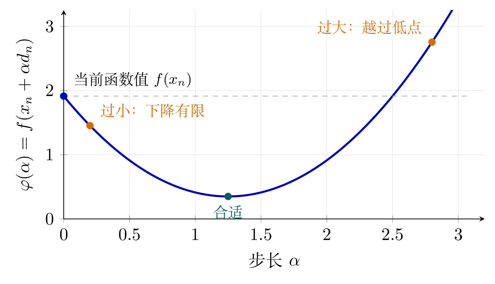

线搜索法
在迭代优化算法中，一次迭代通常包含两个基本步骤：首先确定一个能够使损失函数下降的搜索方向，其次确定沿该方向移动的步长。搜索方向决定参数更新的方向，而步长决定参数沿该方向移动的距离。若步长过小，则每次迭代的推进幅度有限，算法的收敛速度可能较慢；若步长过大，则可能越过适宜的更新区域，使损失函数值无法下降，甚至反而增大。因此，步长的选择需要在保证损失函数充分下降与维持足够迭代进展之间取得平衡。
线搜索法正是为了解决这一问题而引入的。所谓线搜索法，是指在当前点\(x_n\) 和搜索方向\(d_n\) 确定之后，沿着射线\(\{x_n+\alpha d_n:\alpha>0\}\) 寻找一个合适的步长\(\alpha_n\) ，并用它更新迭代点。

图 8.4 沿固定下降方向的一维函数。步长过小会使每次下降有限；步长过大可能越过低点，甚至使函数值高于当前点。
Definition 8.22 . 给定初始步长\(\alpha>0\) 和收缩因子\(\rho\in(0,1)\) ，定义候选步长序列：
\[\begin{equation*}
\alpha_n=\rho^n\alpha,\quad n\in\mathbb{N}
\end{equation*}\]
从\(n=0\) 开始依次检验\(\alpha_n\) 是否满足预先给定的步长接受准则。若取第一个满足该准则的步长\(\alpha_n\) 作为当前迭代步长，则称这种步长选择方法为回溯法（backtracking method） 。
Definition 8.23 . 设\(X\) 为实赋范线性空间，\(E\subseteq X\) 为开集，函数\(f:E\to\mathbb{R}\) 在\(x\in E\) 处Fréchet可微，\(c\in(0,1)\) ，\(d\in X\) 是一个下降方向。若\(\alpha>0\) 满足\(x+\alpha d\in E\) ，并且
\[\begin{equation*}
f(x+\alpha d)\leqslant f(x)+c\alpha\operatorname{D}fx(d)
\end{equation*}\]
则称\(\alpha\) 满足沿方向\(d\) 的Armijo准则 。
note 8.2 . 因为\(d\in X\) 为下降方向，所以\(\operatorname{D}fx(d)<0\) 。由定理 4.6(1) 可得：
\[\begin{equation*}
f(x+\alpha d)=f(x)+\alpha\operatorname{D}fx(d)+\operatorname{o}(\alpha),\;(\alpha\to0)
\end{equation*}\]
因此一阶线性近似预示着，沿方向\(d\) 移动一个小步长\(\alpha\) 后，函数值应当下降，其线性预测下降量为\(-\alpha\operatorname{D}fx(d)>0\) 。Armijo准则要求步长\(\alpha\) 满足：
\[\begin{equation*}
f(x)-f(x+\alpha d)\geqslant-c\alpha\operatorname{D}fx(d)
\end{equation*}\]
因此，Armijo准则的含义是实际下降量至少要达到一阶Taylor线性预测下降量的\(c\) 倍。参数\(c\in(0,1)\) 控制这个要求的严格程度，\(c\) 越大，要求实际下降越接近线性预测下降量。在应用中，\(c\) 常取较小的数值，如\(c=10^{-4}\) 。
Armijo准则的缺陷在于它只控制了步长\(\alpha\) 不能太大，因为太大的步长通常会违反下降条件，但它没有控制”步长不能太小”。如果步长非常非常小，函数值虽然下降得很少，但也可能满足Armijo准则。
Definition 8.24 . 设\(X\) 为实赋范线性空间，\(E\subseteq X\) 为开集，函数\(f:E\to\mathbb{R}\) 在\(x\in E\) 处Fréchet可微，\(c\in(0,0.5)\) ，\(d\in X\) 是一个下降方向。若\(\alpha>0\) 满足\(x+\alpha d\in E\) ，并且
\[\begin{equation*}
f(x)+(1-c)\alpha\operatorname{D}fx(d)
\leqslant
f(x+\alpha d)
\leqslant
f(x)+c\alpha\operatorname{D}fx(d),
\end{equation*}\]
则称\(\alpha\) 满足沿方向\(d\) 的Goldstein准则 。
note 8.3 . Goldstein准则可以看作是在Armijo准则的基础上进一步加入了对步长下界的控制。
Goldstein准则中的右侧不等式正是Armijo准则，它要求函数值具有充分下降。Goldstein准则中的左侧不等式为：
\[\begin{equation*}
f(x)-f(x+\alpha d)
\leqslant
-(1-c)\alpha\operatorname{D}fx(d)
\end{equation*}\]
由于\(-\alpha\operatorname{D}fx(d)>0\) 是一阶Taylor线性近似预示的下降量，因此左侧不等式要求实际下降量不能超过线性预测下降量的\((1-c)\) 倍。由定理 4.6(1) 可得：
\[\begin{equation*}
f(x+\alpha d)=f(x)+\alpha\operatorname{D}fx(d)+\operatorname{o}(\alpha),\;(\alpha\to0)
\end{equation*}\]
因此当\(\alpha\) 过小时，实际下降量会过于接近完整的一阶线性预测下降量，从而违反Goldstein左侧条件。直观地说，这表示沿方向\(d\) 还没有走得足够远，函数沿该方向的下降趋势尚未明显减弱。
综上，Goldstein准则通过两个不等式同时控制步长：右侧的Armijo条件保证步长不能太大，左侧条件保证步长不能太小。
Goldstein的缺陷出于其优势，它用Taylor展开的原理保证了所取的步长\(\alpha\) 不会太小，但是对应的新增不等式在逻辑上却对应着要求下降量不能太大，导致它可能会错杀好步长。
Definition 8.25 . 设\(X\) 为实赋范线性空间，\(E\subseteq X\) 为开集，函数\(f:E\to\mathbb{R}\) 在\(x\) 与\(x+\alpha d\) 处Fréchet可微，\(0<c_1<c_2<1\) ，\(d\in X\) 是一个下降方向。若\(\alpha>0\) 满足\(x+\alpha d\in E\) ，并且：
\[\begin{gather*}
f(x+\alpha d)\leqslant
f(x)+c_1\alpha\operatorname{D}fx(d),\\
\operatorname{D}f(x+\alpha d)(d)\geqslant c_2\operatorname{D}fx(d)
\end{gather*}\]
则称\(\alpha\) 满足沿方向\(d\) 的Wolfe准则 。
note 8.4 . Wolfe准则可以看作是对Goldstein准则的改进。它保留了Armijo准则中的充分下降条件，但将Goldstein准则中用于排除过小步长的函数值下界替换为了方向导数条件。
Wolfe准则中的第二个不等式称为曲率条件。由于\(\operatorname{D}fx(d)<0\) ，该条件要求新点\(x+\alpha d\) 处沿方向\(d\) 的方向导数不能过小。换言之，沿方向\(d\) 的下降趋势必须已经有所减弱。因此，曲率条件的作用是排除过小的步长。
Wolfe准则的缺陷在于所取的\(\alpha\) 可能导致\(x+\alpha d\) 的下降趋势反向增长得过强，即已经从另一个方向远离了损失函数的极小点。
Definition 8.26 . 设\(X\) 为实赋范线性空间，\(E\subseteq X\) 为开集，函数\(f:E\to\mathbb{R}\) 在\(x\) 与\(x+\alpha d\) 处Fréchet可微，\(0<c_1<c_2<1\) ，\(d\in X\) 是一个下降方向。若\(\alpha>0\) 满足\(x+\alpha d\in E\) ，并且：
\[\begin{gather*}
f(x+\alpha d)\leqslant f(x)+c_1\alpha\operatorname{D}fx(d) \\
\left|\operatorname{D}f(x+\alpha d)(d)\right|\leqslant c_2\left|\operatorname{D}fx(d)\right|
\end{gather*}\]
则称\(\alpha\) 满足沿方向\(d\) 的强Wolfe准则 。
note 8.5 . 强Wolfe准则是Wolfe准则的加强形式，其第二个不等式要求沿方向\(d\) 的下降趋势不仅不能过强，而且也不能反向增长得过强。
Theorem 8.3 . 设\(X\) 为实Hilbert空间，\(E\subseteq X\) 为开集，函数\(f\in C^1:E\to\mathbb{R}\) ，\(f\) 在\(E\) 上有下界，\(\nabla f\) 在\(E\) 的Lipschitz连续，即存在常数\(L>0\) ，使得：
\[\begin{equation*}
||\nabla fx-\nabla fy||\leqslant L||x-y||
\end{equation*}\]
给定初始点\(x_0\in E\) ，考虑由线搜索方法生成的迭代序列\(\{x_{n+1}=x_n+\alpha_nd_n\}\) ，其中\(d_n\) 是\(f\) 在\(x_n\) 处的下降方向。若步长\(\alpha_k>0\) 满足Wolfe准则，则有：
\[\begin{equation*}
\sum_{n=0}^{+\infty}\cos^2\theta_n||\nabla fx_n||^2<+\infty
\end{equation*}\]
其中\(\theta_n\) 为\(-\nabla fx_n\) 与\(d_n\) 之间的夹角，即：
\[\begin{equation*}
\cos\theta_n=\frac{-(\nabla fx_n,d_n)}{||\nabla fx_n||\;||d_n||}
\end{equation*}\]
证明 .
\[\begin{equation*}
(\nabla fx_{n+1},d_n)\geqslant c_2(\nabla fx_n,d_n)
\end{equation*}\]
所以：
\[\begin{equation*}
(\nabla fx_{n+1}-\nabla fx_n,d_n)\geqslant(c_2-1)(\nabla fx_n,d_n)
\end{equation*}\]
根据不等式 1 可知：
\[\begin{equation*}
(\nabla fx_{n+1}-\nabla fx_n,d_n)\leqslant||\nabla fx_{n+1}-\nabla fx_n||\;||d_n||\leqslant L||x_{n+1}-x_n||\;||d_n|=\alpha_nL||d_n||^2
\end{equation*}\]
联合上两式可得：
\[\begin{equation*}
\alpha_nL||d_n||^2\geqslant(c_2-1)(\nabla fx_n,d_n) \\
\alpha_n\geqslant\frac{(c_2-1)(\nabla fx_n,d_n)}{L||d_n||^2}
\end{equation*}\]
由Wolfe准则可知：
\[\begin{equation*}
f(x_{n+1})\leqslant f(x_n)+c_1\alpha_n(\nabla fx_n,d_n)\leqslant f(x_n)+c_1\frac{(c_2-1)(\nabla fx_n,d_n)}{L||d_n||^2}(\nabla fx_n,d_n)
\end{equation*}\]
即：
\[\begin{equation*}
f(x_{n+1})\leqslant f(x_n)+c_1\frac{(c_2-1)(\nabla fx_n,d_n)^2}{L||d_n||^2}=f(x_n)+c_1\frac{(c_2-1)\cos^2\theta_n}{L}||\nabla fx_n||^2
\end{equation*}\]
对上式求和即可得到：
\[\begin{equation*}
f(x_{n+1})\leqslant f(x_0)-\frac{c_1(1-c_2)}{L}\sum_{i=0}^{n}\cos^2\theta_i||\nabla fx_i||^2
\end{equation*}\]
因为\(0<c_1<c_2<1\) ，所以\(c_1(1-c_2)>0\) ，即对任意的\(n\in\mathbb{N}\) 有\(f(x_{n+1})\leqslant f(x_0)\) 。因为\(f\) 在\(E\) 上有下界，所以结论成立。 ◻
Theorem 8.4 . 设\(X\) 为实Hilbert空间，\(E\subseteq X\) 为开集，函数\(f\in C^1(E):E\to\mathbb{R}\) ，\(f\) 在\(E\) 上有下界，\(\nabla f\) 在\(E\) 上Lipschitz连续，即存在常数\(L>0\) ，使得：
\[\begin{equation*}
||\nabla fx-\nabla fy||\leqslant L||x-y||
\end{equation*}\]
给定初始点\(x_0\in E\) ，考虑由线搜索方法生成的迭代序列\(\{x_{n+1}=x_n+\alpha_nd_n\}\) ，其中\(d_n\) 是\(f\) 在\(x_n\) 处的下降方向。若步长\(\alpha_k>0\) 满足Wolfe准则，且对任意的\(n\in\mathbb{N}\) ，存在\(\beta>0\) 使得：
\[\begin{equation*}
\theta_n<\frac{\pi}{2}-\beta
\end{equation*}\]
则：
\[\begin{equation*}
\lim_{n\to\infty}||\nabla fx_n||=0
\end{equation*}\]
证明 . 性质 3.1.1(4) 可知存在\(\{\nabla fx_n\}\) 的子列\(\{\nabla fx_{n_k}\}\) 和\(\varepsilon>0\) 使得：
\[\begin{equation*}
\forall\;k\in\mathbb{N}^+,\;||\nabla fx_{n_k}||>\varepsilon
\end{equation*}\]
注意到：
\[\begin{equation*}
\cos(\theta_n)>\cos\left(\frac{\pi}{2}-\beta\right)=\sin\beta
\end{equation*}\]
根据定理 8.3 可得：
\[\begin{equation*}
+\infty>\sum_{n=0}^{+\infty}\cos^2\theta_n||\nabla fx_n||^2>\sum_{k=0}^{+\infty}\cos^2\theta_{n_k}||\nabla fx_{n_k}||^2>\sum_{k=0}^{+\infty}\sin^2\beta\varepsilon^2
\end{equation*}\]
矛盾，所以结论成立。 ◻
note 8.6 . 上述定理中的条件是很直观的，如果\(\theta_n\) 很接近\(\dfrac{\pi}{2}\) ，就意味着梯度方向和下降方向垂直，根据定理 4.6(1) 可知此此时损失函数值几乎不发生变化。
Newton法
Method 8.2 . （Newton Method）
设\(E\subseteq \mathbb{R}^m\) 为开集，函数\(f\in C^2(E):E\to\mathbb{R}\) 。给定当前迭代点\(x_n\in E\) ，\(\nabla^2fx_n\) 可逆，根据定理 4.6(1) ，考虑在\(x_n\) 处沿方向\(d_n\) 的二阶Taylor近似：
\[\begin{align*}
f(x_n+d_n)&\approx f(x_n)+\operatorname{D}fx_n(d_n)+\frac{1}{2}\operatorname{D}^2fx_n(d_n,d_n) \\
&=f(x_n)+(\nabla fx_n)^Td_n+\frac{1}{2}d_n^T\nabla^2fx_nd_n
\end{align*}\]
Newton法的基本思想是：不直接最小化原函数\(f(x_n+d_n)\) ，而是在当前点\(x_n\) 处求解方向\(d_n\) 使得其二次近似最小化。因此，根据定理 4.7(1) ，令上右式关于\(d_n\) 的一阶Fréchet微分为零可得：
\[\begin{equation*}
\nabla^2fx_nd_n=-\nabla fx_n
\end{equation*}\]
从而得到：
\[\begin{equation*}
d_n=-\left(\nabla^2fx_n\right)^{-1}\nabla fx_n
\end{equation*}\]
于是Newton法的迭代格式为：
\[\begin{equation*}
x_{n+1}=x_n+d_n=x_n-\left(\nabla^2fx_n\right)^{-1}\nabla fx_n
\end{equation*}\]
其中\(d_n\) 称为\(f\) 在\(x_n\) 处的Newton方向。
Theorem 8.5 . 设\(E\subseteq \mathbb{R}^m\) 为开集，函数\(f\in C^2(E):E\to\mathbb{R}\) ，\(f\) 在\(E\) 上的最小值点\(x\) 满足：
\[\begin{equation*}
\nabla fx=\mathbf{0},\quad\nabla^2fx>0
\end{equation*}\]
\(\nabla^2fx\) 在\(x\) 的\(\delta\) 邻域（\(\delta>0\) ）\(U(x,\delta)\) 上满足Lipschitz条件：
\[\begin{equation*}
||\nabla^2fx-\nabla^2fy||\leqslant L||x-y||,\quad\forall x,y\in U(x,\delta)
\end{equation*}\]
考虑Newton迭代：
\[\begin{equation*}
x_{n+1}=x_n+d_n=x_n-\left(\nabla^2fx_n\right)^{-1}\nabla fx_n
\end{equation*}\]
则：
如果初始点\(x_0\) 充分接近\(x\) ，则Newton迭代良定，并且\(\{x_n\}\) Q-二次收敛到\(x\) ；
\(\{||\nabla fx_n||\}\) Q-二次收敛到\(0\) 。
证明 .
\[\begin{align*}
x_{n+1}-x&=x_n-\left(\nabla^2fx_n\right)^{-1}\nabla fx_n-x=\left(\nabla^2fx_n\right)^{-1}\left[\nabla^2fx_n(x_n-x)-\nabla fx_n\right] \\
&=\left(\nabla^2fx_n\right)^{-1}\left[\nabla^2fx_n(x_n-x)-\left(\nabla fx_n-\nabla fx\right)\right]
\end{align*}\]
由Newton-Leibniz公式 、性质 4.1.1(6) 和性质 5.4.3(6) 可得：
\[\begin{equation*}
\nabla fx_n-\nabla fx=\int_{0}^{1}\nabla^2f[x_n+t(x-x_n)](x_n-x)\mathop{}\!\mathrm{d}t
\end{equation*}\]
根据性质 5.4.3(6)(7) 积分的范数小于等于范数的积分，算子范数 可得：
\[\begin{align*}
&\left\|\left[\nabla^2fx_n(x_n-x)-\left(\nabla fx_n-\nabla fx\right)\right]\right\| \\
=&\left\|\left[\nabla^2fx_n(x_n-x)-\int_{0}^{1}\nabla^2f[x_n+t(x-x_n)](x_n-x)\mathop{}\!\mathrm{d}t\right]\right\| \\
=&\left\|\int_{0}^{1}\left\{\nabla^2fx_n-\nabla^2f[x_n+t(x-x_n)]\right\}(x_n-x)\mathop{}\!\mathrm{d}t\right\| \\
\leqslant&\int_{0}^{1}\left\|\left\{\nabla^2fx_n-\nabla^2f[x_n+t(x-x_n)]\right\}(x_n-x)\right\|\mathop{}\!\mathrm{d}t \\
\leqslant&\int_{0}^{1}\left\|\left\{\nabla^2fx_n-\nabla^2f[x_n+t(x-x_n)]\right\}\right\|||x_n-x||\mathop{}\!\mathrm{d}t \\
\leqslant&||x_n-x||\int_{0}^{1}Lt||x-x_n||\mathop{}\!\mathrm{d}t=\frac{||x_n-x||^2L}{2}
\end{align*}\]
于是由算子范数 可得：
\[\begin{align*}
&||x_{n+1}-x||=\left\|\left(\nabla^2fx_n\right)^{-1}\left[\nabla^2fx_n(x_n-x)-\left(\nabla fx_n-\nabla fx\right)\right]\right\| \\
\leqslant&\left\|\left(\nabla^2fx_n\right)^{-1}\right\|\left\|\left[\nabla^2fx_n(x_n-x)-\left(\nabla fx_n-\nabla fx\right)\right]\right\| \\
\leqslant&\left\|\left(\nabla^2fx_n\right)^{-1}\right\|\frac{||x_n-x||^2L}{2}
\end{align*}\]
可以证明存在\(r>0\) ，当\(||x_n-x||\leqslant r\) 时有\(\left\|\left(\nabla^2fx_n\right)^{-1}\right\|\leqslant2\left\|\left(\nabla^2fx\right)^{-1}\right\|\) ，所以：
\[\begin{equation*}
\frac{||x_{n+1}-x||}{||x_n-x||^2}\leqslant L\left\|\left(\nabla^2fx\right)^{-1}\right\|
\end{equation*}\]
当：
\[\begin{equation*}
||x_0-x||\leqslant\min\left\{\delta,r,\frac{1}{2L\left\|\left(\nabla^2fx\right)^{-1}\right\|}\right\}
\end{equation*}\]
时结论成立，第三式是因为：
\[\begin{equation*}
||x_1-x||\leqslant L\left\|\left(\nabla^2fx\right)^{-1}\right\|||x_0-x||^2
\end{equation*}\]
右式未必满足小于等于\(||x_0-x||\) ，这将导致序列\(\{x_n:n\geqslant1\}\) 不在\(U(x,\delta)\) 中。一旦控制了该不等式，则\(||x_1-x||\leqslant\dfrac{1}{2}||x_0-x||\) 。设\(n\) 时有：
\[\begin{equation*}
||x_n-x||\leqslant\frac{1}{2L\left\|\left(\nabla^2fx\right)^{-1}\right\|}
\end{equation*}\]
则\(n+1\) 时有：
\[\begin{equation*}
||x_{n+1}-x||\leqslant L\left\|\left(\nabla^2fx\right)^{-1}\right\|||x_n-x||^2\leqslant\frac{1}{2}||x_n-x||
\end{equation*}\]
这保证了\(\{x_n\}\subseteq U(x,\delta)\) ，并且每进行一步范数误差至少减少一半。
(2)由Newton方程、Newton-Leibniz公式，积分的范数小于等于范数的积分，算子范数 、性质 4.1.1(6) 可得：
\[\begin{align*}
&||\nabla fx_{n+1}||=||\nabla fx_{n+1}-\nabla fx_n-\nabla^2fx_nd_n\||=\left\|\int_{0}^{1}\nabla^2f(x_n+td_n)d_n\mathop{}\!\mathrm{d}t-\nabla^2fx_nd_n\right\| \\
=&\left\|\int_{0}^{1}\left[\nabla^2f(x_n+td_n)-\nabla^2fx_n\right]d_n\mathop{}\!\mathrm{d}t\right\|\leqslant\int_{0}^{1}\left\|\left[\nabla^2f(x_n+td_n)-\nabla^2fx_n\right]d_n\right\|\mathop{}\!\mathrm{d}t \\
\leqslant&\int_{0}^{1}\left\|\nabla^2f(x_n+td_n)-\nabla^2fx_n\right\|||d_n||\mathop{}\!\mathrm{d}t\leqslant\int_{0}^{1}L||td_n||\;||d_n||\mathop{}\!\mathrm{d}t=\frac{L||d_n||^2}{2} \\
=&\frac{L}{2}\left\|\left(\nabla^2fx_n\right)^{-1}\nabla fx_n\right\|^2\leqslant\frac{L}{2}\left\|\left(\nabla^2fx_n\right)^{-1}\right\|^2||\nabla fx_n||^2\leqslant2L\left\|\left(\nabla^2fx\right)^{-1}\right\|^2||\nabla fx_n||^2
\end{align*}\]
所以\(\{||\nabla fx_n||\}\) Q-二次收敛到\(0\) 。 ◻

![实验 01「Newton 法：局部二次收敛」结果 1（图 1）]()